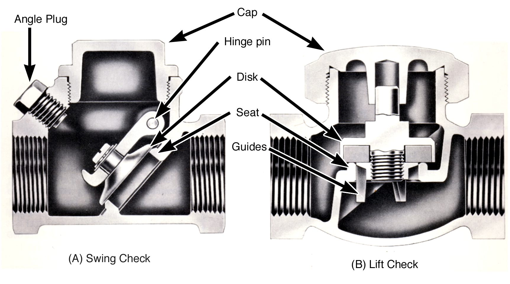

Subsection 5.2.3 Check Valves

A check valve is a modified globe valve that allows fluid flow in one direction only, through a pipe line and automatically stops flow in the opposite direction. A check valve has two basic parts: the body which is similar to the body of a globe valve – with one seat, two external pipe connections, and an opening for the bonnet to attach to; and the Cover or Cap which replaces the globe valve bonnet assembly and fastens to the body using the same methods used to attach bonnets on globe valves. However, the cap is a blank cover with no hand operators, stuffing box or valve stem.
There are three main variations of check valves: swing checks, lift checks, and stop checks, and they are discussed below.
Swing Check.
In a swing check valve the valve seat is angled 45° to the fluid flow path through the valve. The disk is attached by an arm to a hinge pin inside the valve body near the cover opening. The hinge pin is located just above the highest part of the seat opening. When the fluid flow is from right to left and the pressure on the bottom of the disk is greater than the pressure on the top of the disk, the disk swings away from the seat allowing flow to take place. When fluid flow tries to reverse (from left to right), the pressure on top of the disk becomes greater than the pressure on the bottom of the disk, the disk to moves back toward the seat, preventing flow in this direction. The arm and hinge pin assembly assure correct alignment between the disk and seat for a tight closure.
Lift Check.
A lift check valve has a specially designed disk or ball which closes against a seat just like a typical globe valve. In this design, the disk or ball is not attached to any arm or stem. Since the disk is free to move away from the seat without an arm or stem to guide it back in correct alignment to the seat upon closing, other guidance means are employed. In most lift check valves, the disk (with higher than normal sides) or the ball just fits into to hole in the upper part of the body. When flow pushes the disk or ball away from the seat, the walls of the hole in the upper body guide the disk or ball straight up away from the seat. These walls also guide the disk straight down when it is closing assuring correct alignment between the disk and seat for tight closure.
Stop Check.
A stop-check valve is very similar to a globe valve, except that the disk is not attached to the stem. When the valve hand-wheel is turned to the fully closed position the disk is held against the seat and the valve is securely closed. When the valve hand-wheel is turned to open the valve, the disk is free to lift off the seat, and will when there is a pressure difference in the correct direction. If the flow reverses direction, the valve will automatically close like a lift check valve.
The valve stem can be used to force the disk to a partially closed position to regulate the flow, or to a fully closed position to stop the flow, but the valve stem cannot be used to force the disk into the open position. Once the stem is moved away from the disk, the valve functions like a lift check valve.
A typical application would be a boiler feedwater stop-check valve. The valve can be used to stop or regulate feedwater flow to the boiler. It also automatically prevents the back flow of water out of the boiler through the feedwater line if the pressure in the feedwater line falls below the boiler steam pressure. In this application, it functions as a check valve.
In some designs, a stop-check valve can be converted to a regular globe valve, which eliminates the check function and allows the disk to be forced into the open position, by reinstalling the disk nut or drilling a hole through the upper disk and valve stem and inserting a pin to lock them together.
When installing a check valve, always remember: Check valves must be installed in a manner that allows gravity to help close the disk. This way the valve will close even if the flow reversal is only slight. Swing checks are normally installed in piping systems with the cap up, and lift checks are installed with the disks closing in the downward direction. There is usually a directional arrow on the valve body which indicates the direction of fluid flow.